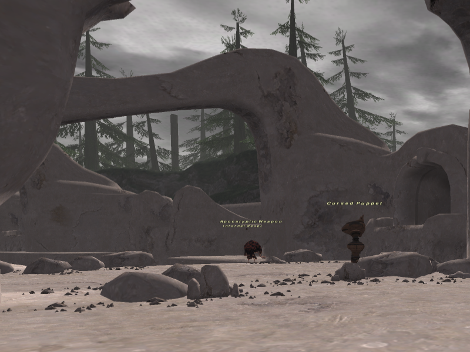

WELCOME TO ATAVISM.
LETS HAVE FUN AND ENJOY.
JOIN A PARTY - MAKE FRIENDS
Atavism is a private server based on Project Topaz built from the Canary branch. There are bugs to resolve but this helps developers when releasing the stable version.
Online 365 days/year
Server is privately hosted, connected to a symmetrical gigabit fiber connection.
No character loss
Character data is backed up everyday. You can feel at ease knowing that all your hard work won't be lost.
Weekly updates
Keeping up-to-date with Project Topaz after weekly meetings.
Open source
We do not hide how this server works. Everything is available at Project Topaz. If you want to fix or create quests, BCNMs, etc you are more than welcome to.
